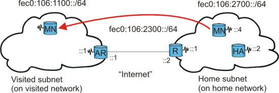

4. Test bed
Now you should have a working MIPL patched kernel, installed userlevel tools and enabled automatic startup at boot. If anything went wrong, go through the above sections carefully.
4.1. Testcase
The addresses we are using in our test-bed are site-local. You may as well use global addresses, but do note that link local addresses won't work! Our test-bed consist of four nodes; see figure "Mobile IPv6 testbed".
HA - Home Agent: The HA is located at the home network with address fec0:106:2700::2, with one wireless interface.
MN - Mobile Node: When MN is on the "home network", it has address fec0:106:2700::4. When MN travels to another network, it generates a new "care-of" address.
R - Router: This is the router from the home network to the internet. It has one wireless interface with address fec0:106:2700::1 and a wired interface with address fec0:106:2300::2.
AR - Access Router: The link between AR and R is our "internet" - but in this testcase only a cross-cable (can be any network). The AR has two interfaces; the wired interface to R has address fec0:106:2300::1, the wireless has address fec0:106:1100::1.

Mobile IPv6 testbed
4.2. Step-by-step configuration
4.2.1. Setting up a fully functional IPv6 network
Before we can start testing mobile IP, we need a fully functional IPv6 network. All the nodes should be able to ping each other. This is a crucial part. If, for example, AR is not able to ping HA, then there will be no binding update.
I will give a brief instruction to get our network up and running using IPv6. For more info on setting up an IPv6 network, you can read Peter Bieringer's excellent Linux IPv6 HOWTO.
I've turned off encryption for simplicity - NOTE that you should ALWAYS use encryption when dealing with wireless networks!
Also note that the different wireless networks have different ESSIDs!
MN: The Mobile Node has one wireless interface. Forwarding should be turned off, but should accept autoconf and ra's:
# iwconfig eth0 mode ad-hoc essid homenet enc off # ifconfig eth0 inet6 add fec0:106:2700::4/64 # echo "0" > /proc/sys/net/ipv6/conf/eth0/forwarding # echo "1" > /proc/sys/net/ipv6/conf/eth0/autoconf # echo "1" > /proc/sys/net/ipv6/conf/eth0/accept_ra # echo "1" > /proc/sys/net/ipv6/conf/eth0/accept_redirects # /etc/init.d/mobile-ip6 startHA: The Home Agent has one wireless interface. It should have forwarding turned on because it uses normal routing to deliver packets captured from a physical interface to the virtual tunnel interface. Note: You must add a default route or else HA will have problem contacting the MN on visited LAN's. One possible solution is to use HA as the default router of the home network.
# iwconfig eth0 mode ad-hoc essid homenet enc off # ifconfig eth0 inet6 add fec0:106:2700::2/64 # echo "1" > /proc/sys/net/ipv6/conf/eth0/forwarding # echo "0" > /proc/sys/net/ipv6/conf/eth0/autoconf # echo "0" > /proc/sys/net/ipv6/conf/eth0/accept_ra # echo "0" > /proc/sys/net/ipv6/conf/eth0/accept_redirects # ip route add ::/0 via fec0:106:2700::1 # /etc/init.d/mobile-ip6 startR: The (home) Router has two interfaces; one wireless and one line. The Router must have forwarding turned on.
# ifconfig eth0 inet6 add fec0:106:2300::2/64 # iwconfig eth1 mode ad-hoc essid homenet enc off # ifconfig eth1 inet6 add fec0:106:2700::1/64 # echo "1" > /proc/sys/net/ipv6/conf/all/forwarding # echo "0" > /proc/sys/net/ipv6/conf/all/autoconf # echo "0" > /proc/sys/net/ipv6/conf/all/accept_ra # echo "0" > /proc/sys/net/ipv6/conf/all/accept_redirects # ip route add fec0:106:1100::/64 via fec0:106:2300::1AR: The Access Router (on a foreign network) also has two interfaces; one wireless and one line. Forwarding must be turned on.
# ifconfig eth0 inet6 add fec0:106:2300::1/64 # iwconfig eth1 mode ad-hoc essid visitnet enc off # ifconfig eth1 inet6 add fec0:106:1100::1/64 # echo "1" > /proc/sys/net/ipv6/conf/all/forwarding # echo "0" > /proc/sys/net/ipv6/conf/all/autoconf # echo "0" > /proc/sys/net/ipv6/conf/all/accept_ra # echo "0" > /proc/sys/net/ipv6/conf/all/accept_redirects # ip route add fec0:106:2700::/64 via fec0:106:2300::2
Instead of modifying proc variables, you can use sysctl.
Note: We are setting static routes on our test-bed. You should now be able to ping all the hosts from every host.
4.2.2. Configuring Mobile IPv6
The last configuration is MIPv6 settings in network-mip6.conf. In Debian/Slackware the file is found under /etc/. (RedHat the file is found under /etc/sysconfig/.) The file should be pretty self-explanatory.
HA: The HA config file should contain these settings:
# cat /etc/network-mip6.conf # Home Agent configuration file FUNCTIONALITY=ha DEBUGLEVEL=1 MIN_TUNNEL_NR=1 MAX_TUNNEL_NR=5 TUNNEL_SITELOCAL=yesMN: The MN config file should look like this:
# cat /etc/network-mip6.conf # Mobile Node configuration file FUNCTIONALITY=mn DEBUGLEVEL=1 TUNNEL_SITELOCAL=yes MIN_TUNNEL_NR=1 MAX_TUNNEL_NR=3 HOMEDEV=mip6mnha1 HOMEADDRESS=fec0:106:2700::4/64 # MN's home adress HOMEAGENT=fec0:106:2700::2/64 # HA's addressNext, start mobile-IP:
# /etc/init.d/mobile-ip6 start Starting Mobile IPv6: OK
You can verify that it started by doing a ifconfig on HA. If the tunnel(s) comes up, ip6tnl1, mobile-ip6 is started:
# ifconfig
eth1 Link encap:Ethernet HWaddr 00:02:2D:2D:DE:79
inet6 addr: fec0:106:2700::2/64 Scope:Site
inet6 addr: fe80::202:2dff:fe2d:de79/64 Scope:Link
UP BROADCAST RUNNING MULTICAST MTU:1500 Metric:1
RX packets:618 errors:6 dropped:6 overruns:0 frame:6
TX packets:1485 errors:22 dropped:0 overruns:0 carrier:0
collisions:0 txqueuelen:100
RX bytes:87914 (85.8 KiB) TX bytes:252596 (246.6 KiB)
Interrupt:3 Base address:0x100
ip6tnl1 Link encap:UNSPEC HWaddr 00-00-00-00-00-00-00-00-00-00-00-00-00-00-00-00 |

- The tunnel is up and ready for connections.

- Another tunnel ready.
You will also see the mipv6 kernel modules are loaded (MN):
# lsmod
Module Size Used by Not tainted
mip6_mn 59888 0 (unused)
ipv6_tunnel 11448 1 [mip6_mn]
mip6_base 40728 0 [mip6_mn]
ipv6 179764 -1 [mip6_mn ipv6_tunnel mip6_base]
...
|
4.2.3. Configuring radvd on AR
When MN comes to a new network, it does a link-local address configuration, going to the next phase if that succeeds. I'll let [RFC2462] (IPv6 Stateless Address Autoconfiguration) describe the next phase:
"The next phase of autoconfiguration involves obtaining a Router Advertisement or determining that no routers are present. If routers are present, they will send Router Advertisements that specify what sort of autoconfiguration a host should do. If no routers are present, stateful autoconfiguration should be invoked."
"Routers send Router Advertisements periodically, but the delay between successive advertisements will generally be longer than a host performing autoconfiguration will want to wait. To obtain an advertisement quickly, a host sends one or more Router Solicitations to the all-routers multicast group." --- page 8
This is where we use RADVD.
Read [RFC2462] more more details concerning IPv6 Stateless Address Autoconfiguration.
We'll configure RADVD on AR's wireless interface. The radvd.conf file should contain this:
# cat /etc/radvd.conf
interface eth1
{
AdvSendAdvert on;
AdvIntervalOpt on;
MinRtrAdvInterval 3;
MaxRtrAdvInterval 10;
AdvHomeAgentFlag off;
prefix fec0:106:1100::/64
{
AdvOnLink on;
AdvAutonomous on;
AdvRouterAddr on;
};
};
|
We then start it:
# /etc/init.d/radvd start
|
You should now be able to use radvdump to see that the radvd messages really are being sent periodically:
# radvdump
Router advertisement from fe80::202:2dff:fe54:d1b2 (hoplimit 255)
Received by interface eth1
# Note: {Min,Max}RtrAdvInterval cannot be obtained with radvdump
AdvCurHopLimit: 64
AdvManagedFlag: off
AdvOtherConfigFlag: off
AdvHomeAgentFlag: off
AdvReachableTime: 0
AdvRetransTimer: 0
Prefix fec0:106:1100::/64
AdvValidLifetime: 2592000
AdvPreferredLifetime: 604800
AdvOnLink: on
AdvAutonomous: on
AdvRouterAddr: off
AdvSourceLLAddress: 00 02 2D 54 D1 B2
|
Note! When using radvd on HA and enabling "autoconf" (in proc), you will also get an autogenerated IPv6 address on MN (which is superfluous) in addition to your static address:
4.2.4. Configuring radvd on HA
To enable the MN to know when it's home, HA should also be sending out RAs. We should therefore enable RADVD on the HA as well. The /etc/radvd.conf file should contain:
# cat /etc/radvd.conf
interface eth0
{
AdvSendAdvert on;
MaxRtrAdvInterval 3;
MinRtrAdvInterval 1;
AdvIntervalOpt off;
AdvHomeAgentFlag on;
HomeAgentLifetime 10000;
HomeAgentPreference 20;
AdvHomeAgentInfo on;
prefix fec0:106:2700::2/64
{
AdvRouterAddr on;
AdvOnLink on;
AdvAutonomous on;
AdvPreferredLifetime 10000;
AdvValidLifetime 12000;
};
};
|
Also do a radvdump on HA to check whether radvd messages are beeing sent:
# radvdump
Router advertisement from fe80::202:2dff:fe54:d11e (hoplimit 255)
Received by interface eth0
# Note: {Min,Max}RtrAdvInterval cannot be obtained with radvdump
AdvCurHopLimit: 64
AdvManagedFlag: off
AdvOtherConfigFlag: off
AdvHomeAgentFlag: on
AdvReachableTime: 0
AdvRetransTimer: 0
Prefix fec0:106:2700::2/64
AdvValidLifetime: 12000
AdvPreferredLifetime: 10000
AdvOnLink: on
AdvAutonomous: on
AdvRouterAddr: on
AdvSourceLLAddress: 00 02 2D 54 D1 1E
AdvHomeAgentInfo:
HomeAgentPreference: 20
HomeAgentLifetime: 1000
|
# ifconfig eth0
eth0 Link encap:Ethernet HWaddr 00:90:7D:F3:03:1A
inet6 addr: fec0:106:2700:0:290:7dff:fef3:31a/64 Scope:Site |
- A new (superfluous) autogenerated address. Since we are setting autoconf in /proc/sys/net/ipv6/conf/eth0/autoconf to 1, MN will generate a new adress combined with HA's prefix and it's own MAC address. I do not think is it possible to avoid having this address generated.
- Our original static IPv6 address

- The link-local address generated at boot.